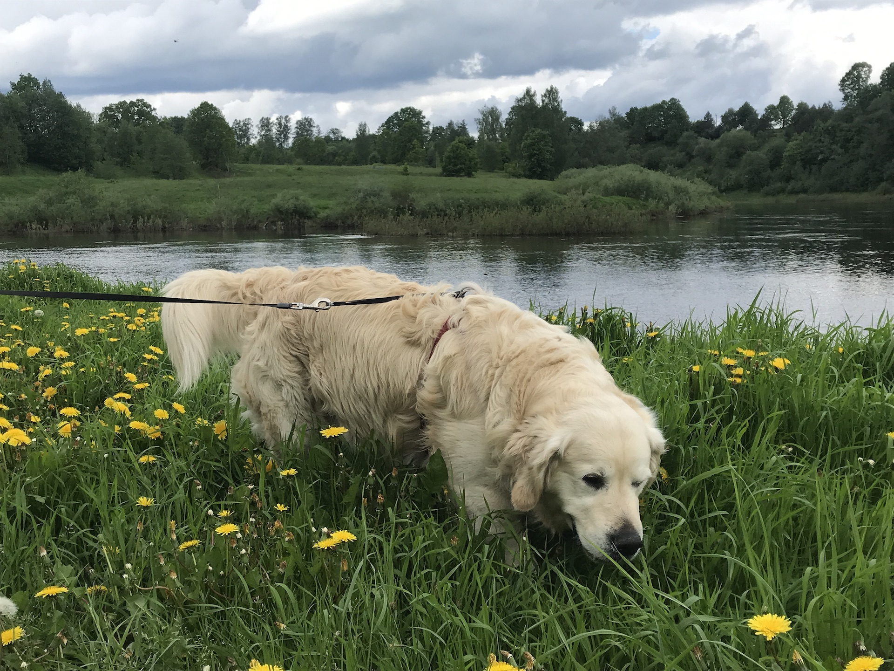
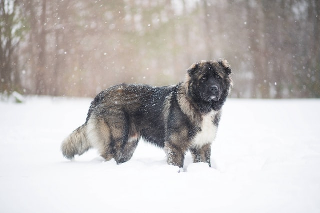
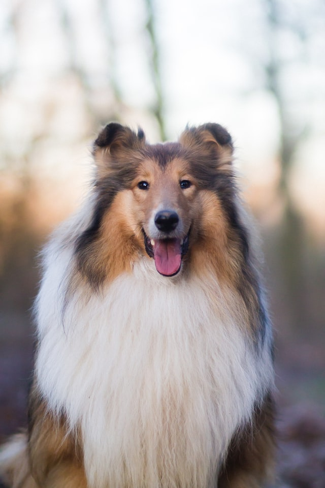

The Cavalier King Charles Spaniel is a small breed of spaniel classed in the toy group of The Kennel Club and the American Kennel Club[1] that originated in the United Kingdom. Since 2000, it has grown in popularity in the United States and ranks as the 19th most popular pure-breed in the United States.[2] It has a silky, smooth coat and commonly a smooth undocked tail. The breed standard recognizes four colours: Blenheim (chestnut and white), tricolour (black/white/tan), black and tan, and ruby.[1] The breed is generally friendly, placid, and good with both children and other animals; however, they require much human interaction. Since they are family dogs, it is recommended to not leave one alone for long periods at a time. The expected lifespan of a Cavalier King Charles Spaniel is between nine and fourteen years.[3] Read more
From Wikipedia: Cavalier King Charles Spaniel.

The Golden Retriever is a medium-large gun dog that was bred to retrieve shot waterfowl, such as ducks and upland game birds, during hunting and shooting parties.[3] The name "retriever" refers to the breed's ability to retrieve shot game undamaged due to their soft mouth. Golden retrievers have an instinctive love of water, and are easy to train to basic or advanced obedience standards. They are a long-coated breed, with a dense inner coat that provides them with adequate warmth in the outdoors, and an outer coat that lies flat against their bodies and repels water. Golden retrievers are well suited to residency in suburban or country environments.[4] They shed copiously, particularly at the change of seasons, and require fairly regular grooming. The Golden Retriever was originally bred in Scotland in the mid-19th century.[3][5] Read more
From Wikipedia: Golden Retriever.

The Caucasian Shepherd Dog, also known as the Caucasian Ovcharka is a breed of large livestock guardian dog native to the countries of the Caucasus region, notably Georgia, Armenia, Azerbaijan, and Dagestan.[1] Selective breeding of caucasian shepherds started in the Soviet Union from about 1920 from dogs of the Caucasus Mountains and the steppe regions of Southern Russia.[2] The Caucasus Mountains in Georgia has historically been the principal region of distribution of the Caucasian Shepherd dogs, both in terms of numbers and the quality of the dogs present in the area.[1] Read more
From Wikipedia: Caucasian Shepherd Dog.

The German Shepherd (German: Deutscher Schäferhund, German pronunciation: [ˈdɔʏtʃɐ ˈʃɛːfɐˌhʊnt]) is a breed of medium to large-sized working dog that originated in Germany. According to the FCI, the breed's English language name is German Shepherd Dog. The breed name was officially known as the "Alsatian Wolf Dog" in the UK from after the First World War until 1977 when its name was changed back to German Shepherd.[2] Despite its wolf-like appearance, the German Shepherd is a relatively modern breed of dog, with its origin dating to 1899. Read more
From Wikipedia: German Shepherd.

The beagle is a breed of small scent hound, similar in appearance to the much larger foxhound. The beagle was developed primarily for hunting hare (beagling). Possessing a great sense of smell and superior tracking instincts, the beagle is the primary breed used as a detection dog for prohibited agricultural imports and foodstuffs in quarantine around the world. The beagle is intelligent. It is a popular pet due to its size, good temper, and a lack of inherited health problems. Read more
From Wikipedia: Beagle.

Collies form a distinctive type of herding dogs, including many related landraces and standardized breeds. The type originated in Scotland and Northern England. Collies are medium-sized, fairly lightly-built dogs, with pointed snouts. Many types have a distinctive white color over the shoulders. Collies are very active and agile, and most types of collies have a very strong herding instinct. Collie breeds have spread through many parts of the world (especially Australia and North America), and have diversified into many varieties, sometimes mixed with other dog types. Some collie breeds have remained as working dogs for herding cattle, sheep, and other livestock, while others are kept as pets, show dogs or for dog sports, in which they display great agility, stamina and trainability. While the American Kennel Club has a breed they call "collie", in fact collie dogs are a distinctive type of herding dog inclusive of many related landraces and formal breeds. There are usually major distinctions between show dogs and those bred for herding trials or dog sports: the latter typically display great agility, stamina and trainability, and, more importantly, sagacity. Read more
From Wikipedia: Collie.